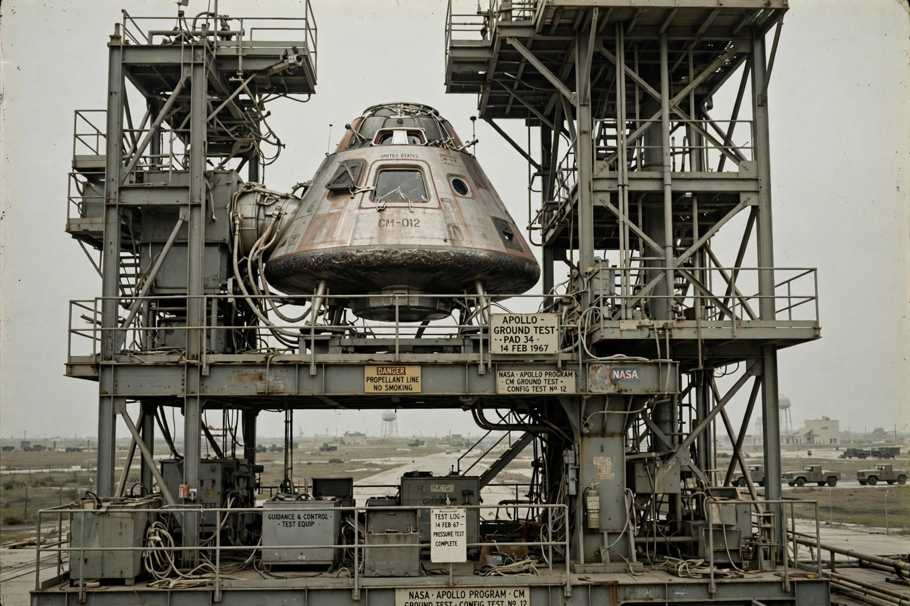

Apollo 1
From Wikipedia, the free encyclopedia
| Apollo 1 | |
|---|---|
| Crew | Gus Grissom, Ed White, Roger Chaffee |
| Date | 27 January 1967 |
| Location | Cape Canaveral LC-34 |
| Outcome | Crew killed in cabin fire during test |

The Apollo 1 spacecraft at Launch Complex 34.Apollo 1, initially designated AS-204, was planned to be the first crewed mission of the Apollo program. On 27 January 1967, during a launch rehearsal test atop its Saturn IB rocket at Cape Canaveral, a fire broke out in the pure-oxygen cabin of the command module, killing all three astronauts: command pilot Virgil "Gus" Grissom, senior pilot Edward H. White II, and pilot Roger B. Chaffee.
The crew could not escape: the plug-type hatch opened inward against the cabin pressure and took minutes to operate even without a fire. The disaster forced a 20-month stand-down of crewed Apollo flights and a wholesale redesign of the command module — a quick-opening outward hatch, a nitrogen-oxygen launch atmosphere, removal of flammable materials, and protected wiring.
Investigation and legacy
A review board found the fire most likely began with damaged wiring near the environmental control unit, igniting in the oxygen-rich cabin where many materials burned fiercely. The accident became a turning point in NASA's safety culture; the redesigned Block II spacecraft that resulted flew successfully for the rest of the programme, beginning with Apollo 7 in October 1968.
The mission was retroactively named Apollo 1 at the request of the crew's widows. The burned capsule's hatch is displayed at Kennedy Space Center, and the crew are memorialised at the launch complex, which bears a plaque: Ad astra per aspera — "a rough road leads to the stars."
See also
Gus Grissom · Edward White (astronaut) · Apollo program · Apollo 7 · Kennedy Space Center